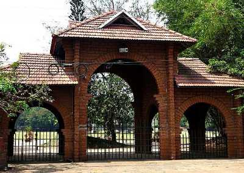
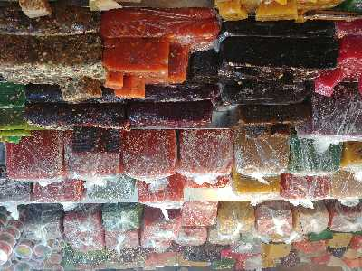

Kozhikode
Beypore

Beypore is a cosy coastal town tucked away in the small but striking Kozhikode District. Located at the mouth of the energetic Chaliyar River, this town is covered in vibrant shades of green and surrounded by mystic shades of blue. When under the reign of Tipu Sultan, who was the ruler of Mysore, this town was named Sultan Pattanam.
Mananchira Square
Fed by a natural shower, Mananchira is a man-made freshwater pond surrounding which is the astounded complex, Mananchira Square. The pond was built in around 14th century as a bathing pool by the feudal ruler of Kozhikode, Zamorin Mana Vikrama whereas the Mananchira Square was opened in 1994. Previously, the Square was known as Manachira Maidan and was famous for football. It was a host of many matches as well.
Sweet Street (Mithai Theravu)
A popular hub to gorge on sweet delectables, the Sweet Street is one of the busiest place to shop in Kozhikode. It remains open till 9 in the night.
Thikkoti Light House

Said to be built on the remains of a shipwreck, the Thikkoti Lighthouse is one of the major attractions of Kozhikode. Located on a rocky shoreline, the place is best known for the scenic views it offers as well as several species of nomadic birds.